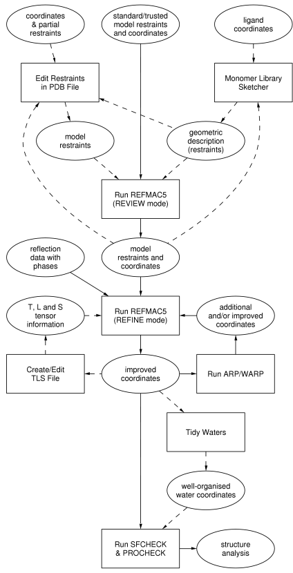

|
CCP4 Roadmaps |
| REFINEMENT |
REFINEMENT
Refinement with REFMAC5 requires reflection data, a set of model coordinates, and
a library defining the restraints for standard groups. If a non-standard group is
encountered (in the REVIEW mode), the user has to build up a set of restraints through
the use of SKETCHER/LIBCHECK.

The plain rectangular boxes represent
tasks as in the
CCP4 Graphical User Interface, the steps to take for refinement.
The ellipsoids represent the input and output to and from the various tasks.
Auxiliary CCP4 programs used in these tasks
- ANISOANL
- Analyse anisotropic displacement parameters
- ICOEFL
- Vectorially combined scaling of Fobs (Iobs) with partial Fc's
- LIBCHECK
- Monomer library management program
-
- INTRO_MON_LIB
- Introduction to the multi-purpose monomer libraries used by REFMAC
- MON_LIB
- Multi-purpose monomer libraries used by REFMAC
- MAKEDICT
- Convert PDB file to TNT or PROTIN dictionaries and PROTIN to PDB
- NCSREF
- NCS phased refinement; refining molecular replacement solutions when the structure contains NCS models
- PROTIN
- Prepare restraints file for REFMAC (no longer required in REFMAC version 5)
- RDENT
- Create dictionary files for RESTRAIN from PDB file
- REFMAC5
- Version 5.0, REFMAC - Maximum Likelihood refinement with automatic restraint-building
- RESTRAIN
- Macromolecular refinement
- RSTATS
- Scale together two sets of F's
- SFALL
- Structure factor calculation and X-ray refinement using forward and reverse FFT
- SKETCHER
- Monomer library sketcher, an aid to setting up the restraints library for REFMAC5
- TLSANL
- Evaluate TLS tensors from RESTRAIN
- WATNCS
- Pick waters which follow NCS and sort out to NCS asymmetric unit
Other non-CCP4 programs
- CNS
- Crystallography & NMR System
-
- SHELX-97
- Structure solution and refinement in one system
- TNT
- Macromolecular refinement
Further reading
REFMAC 5.0 at York

CCP4i Documentation on Refinement
CCP4 Program Documentation